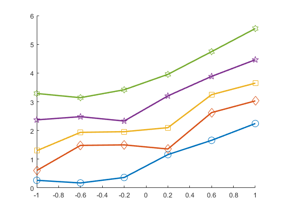
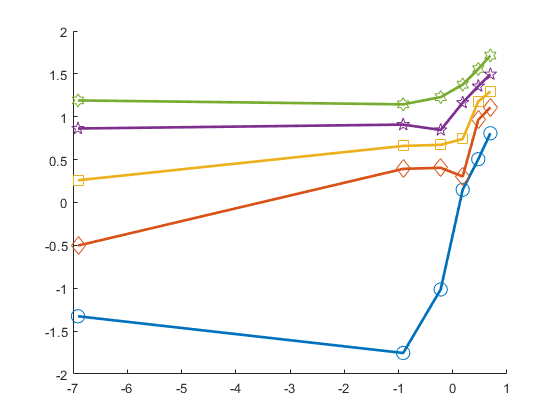
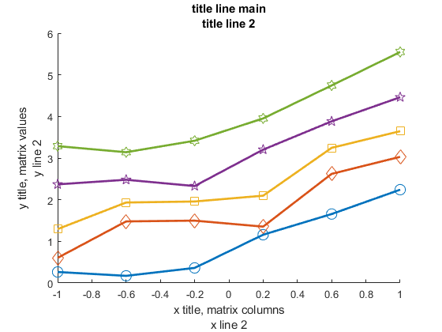
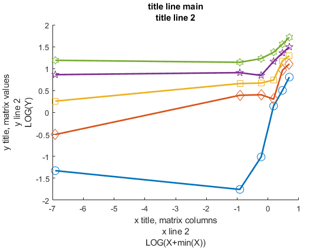
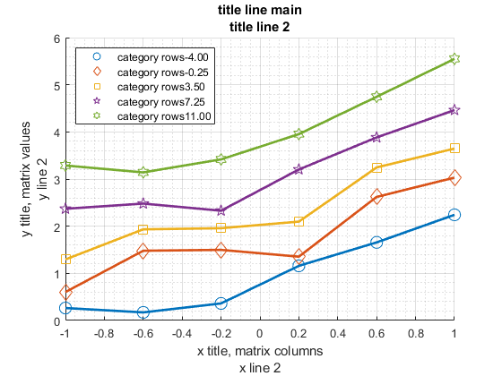
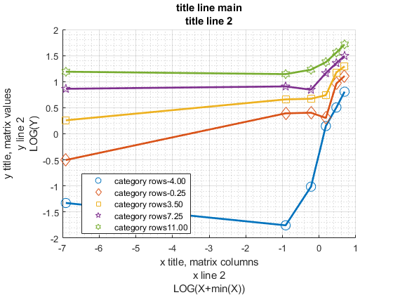

FF_GRAPH_GRID Grid based Graph, x-axis one param, color another param, over outcomes
FF_GRAPH_GRID() draws matrix values (MT_VALUE) as Y, columns
(AR_COL_GRID) as X, and rows (AR_ROW_GRID) as separate lines. For
example columns could be asset points, and rows could be corresponding
to different shocks, and MT_VALUE are different policy optimal chocies
given asset and shock points. The AR_ROW_GRID values can be
* MT_VALUE R by C numeric matrix
* AR_COL_GRID 1 by C array, numeric array
* AR_ROW_GRID 1 by R array, numeric or string array (NOT CHAR array)
* MP_SUPPORT_GRAPH container map
MP_SUPPORT_GRAPH keys and Example Values:
MP_SUPPORT_GRAPH = containers.Map('KeyType', 'char', 'ValueType', 'any');
MP_SUPPORT_GRAPH('cl_st_graph_title') = {'title line main', 'title line 2'};
MP_SUPPORT_GRAPH('cl_st_ytitle') = {'y title, matrix values', 'y line 2'};
MP_SUPPORT_GRAPH('cl_st_xtitle') = {'x title, matrix columns', 'x line 2'};
MP_SUPPORT_GRAPH('st_rowvar_name') = 'category rows';
MP_SUPPORT_GRAPH('st_legend_loc') = 'northwest';
MP_SUPPORT_GRAPH('bl_graph_logy') = true;
MP_SUPPORT_GRAPH('it_legend_select') = 5;
MP_SUPPORT_GRAPH('st_rounding') = '.2f';
MP_SUPPORT_GRAPH('cl_scatter_shapes') = {'s', 'x', 'o', 'd'};
MP_SUPPORT_GRAPH('cl_colors') = {'blue', 'red', 'black', 'green'}; When the number of rows (shocks) is below six, each line will have
a scatter point overlay with different scatter patterns.
Each rows (shocks), will have a different color from a color
spectrum. In the legend, at most 5 color/shape values will be shown.
When the number of rows exceeds 5, only five colors will be shown. The
middle color could be zero shock, the boundary points are highest and
lowest shock points.
FF_GRAPH_GRID() draw figure with a testing matrix. f(row, col), 6 row
values, 10 column values, f are growing splines with different
x-intercepts and random shocks
FF_GRAPH_GRID(MT_VALUE) draw a figure with a matrix of values. The
matrix values will show up as y=axis values. The x-axis will be column
index. Each row will have a different colored/patterned line. Legend
indicates row index.
FF_GRAPH_GRID(MT_VALUE, AR_ROW_GRID, AR_COL_GRID) uses the column grid
values as x-axis points, and row-grid points as legend labels.
FF_GRAPH_GRID(MT_VALUE, AR_ROW_GRID, AR_COL_GRID, MP_SUPPORT_GRAPH)
overrides local default options.
See also FX_GRAPH_GRID
Contents
function varargout = ff_graph_grid(varargin)
Parse Main Inputs and Set Defaults
if (~isempty(varargin))
if (length(varargin)==1)
mt_value = varargin{:};
[it_rows, it_cols] = size(mt_value);
ar_row_grid = num2str(1:1:it_rows);
ar_col_grid = 1:1:it_cols;
elseif (length(varargin)==3)
[mt_value, ar_row_grid, ar_col_grid] = varargin{:};
elseif (length(varargin)==4)
[mt_value, ar_row_grid, ar_col_grid, mp_support_graph_ext] = varargin{:};
end
else
close all;
ar_row_grid = linspace(-4, 11, 8);
ar_col_grid = linspace(-1, 1, 6);
rng(123);
mt_value = 0.2*ar_row_grid' + exp(ar_col_grid) + rand([length(ar_row_grid), length(ar_col_grid)]);
end
Set and Update Graph Support Map
mp_support_graph = containers.Map('KeyType', 'char', 'ValueType', 'any');
mp_support_graph('cl_st_graph_title') = {'title line main', 'title line 2'};
mp_support_graph('cl_st_ytitle') = {'y title, matrix values', 'y line 2'};
mp_support_graph('cl_st_xtitle') = {'x title, matrix columns', 'x line 2'};
mp_support_graph('st_rowvar_name') = 'category rows';
mp_support_graph('st_legend_loc') = 'northwest';
mp_support_graph('bl_graph_logy') = true;
mp_support_graph('it_legend_select') = 5;
mp_support_graph('st_rounding') = '.2f';
mp_support_graph('cl_scatter_shapes') = ...
{'o', 'd', 's', 'p', 'h', 'x', '*', '>', '<'};
mp_support_graph('cl_colors') = ...
{'blue', 'red', 'black', 'green', 'brown', 'purple', 'gray', 'orange'};
if (length(varargin)==4)
mp_support_graph = [mp_support_graph; mp_support_graph_ext];
end
Parse Title and Lengends
cl_params = values(mp_support_graph, {'cl_st_graph_title', ...
'cl_st_ytitle', 'cl_st_xtitle', 'st_rowvar_name'});
[cl_st_graph_title, cl_st_ytitle, cl_st_xtitle, st_rowvar_name] = cl_params{:};
cl_params = values(mp_support_graph, {'st_legend_loc', 'bl_graph_logy', ...
'it_legend_select', 'st_rounding'});
[st_legend_loc, bl_graph_logy, it_legend_select, st_rounding] = cl_params{:};
Parse Graphing Details
cl_params = values(mp_support_graph, {'cl_scatter_shapes', 'cl_colors'});
[cl_scatter_shapes, cl_colors] = cl_params{:};
mp_colors = containers.Map('KeyType', 'char', 'ValueType', 'any');
mp_colors('blue') = [57 106 177]./255;
mp_colors('red') = [204 37 41]./255;
mp_colors('black') = [83 81 84]./255;
mp_colors('green') = [62 150 81]./255;
mp_colors('brown') = [146 36 40]./255;
mp_colors('purple') = [107 76 154]./255;
mp_colors('gray') = [128 133 133]./255;
mp_colors('orange') = [255 140 0]./255;
cl_color_values = values(mp_colors, cl_colors);
Generaet Graph
if (bl_graph_logy)
ar_it_plot = [1,2];
else
ar_it_plot = [1];
end
for it_plot = ar_it_plot
Plot Initiate
pl_obj = figure('PaperPosition', [0 0 7 4]);
hold on;
it_graph_counter = 0;
cl_legend = [];
Log Transform
ar_x = ar_col_grid;
mt_value_use = mt_value;
if (it_plot == 2)
if (min(min(mt_value))>0)
mt_value_use = log(mt_value_use + 0.001);
st_log_func_y = 'LOG(Y)';
else
fl_y_log_adj = abs(min(min(mt_value)))+0.001;
mt_value_use = log(mt_value_use + fl_y_log_adj);
st_log_func_y = 'LOG(Y+min(Y))';
end
if (min(ar_col_grid)>0)
ar_x = log(ar_x);
st_log_func_x = 'LOG(X)';
else
ar_x = log(ar_x-min(ar_col_grid)+0.001);
st_log_func_x = 'LOG(X+min(X))';
end
end
Plot Given Fewer or Many Rows Counts
if (length(ar_row_grid) > length(cl_scatter_shapes))
Plot Many Rows as Jet Lines
chart = plot(mt_value_use');
clr = jet(numel(chart));
for m = 1:numel(chart)
set(chart(m),'Color',clr(m,:))
end
else
Plot Less than 7 Rows as Scatter + Lines
for it_color = 1:length(ar_row_grid)
florst_row_param = ar_row_grid(it_color);
it_graph_counter = it_graph_counter + 1;
ar_color = cl_color_values{it_color};
ar_y_use = mt_value_use(it_color,:);
it_csize = 100;
st_shape = cl_scatter_shapes{it_color};
scatter(ar_x', ar_y_use', it_csize, ...
ar_color, st_shape, ...
'MarkerFaceAlpha', 1.0, 'MarkerEdgeAlpha', 1.0);
line = plot(ar_x, ar_y_use);
line.Color = ar_color;
line.LineStyle = '-';
line.LineWidth = 2;
line.HandleVisibility = 'off';
if (isnumeric(florst_row_param))
cl_legend{it_graph_counter} = compose(strcat(st_rowvar_name, "%", st_rounding), florst_row_param);
else
cl_legend{it_graph_counter} = florst_row_param;
end
end
 
end
Titling
cl_st_ytitle_use = cl_st_ytitle;
cl_st_xtitle_use = cl_st_xtitle;
cl_st_graph_title_use = cl_st_graph_title;
if (it_plot == 2)
cl_st_ytitle_use{length(cl_st_ytitle_use)+1} = st_log_func_y;
cl_st_xtitle_use{length(cl_st_xtitle_use)+1} = st_log_func_x;
end
title(cl_st_graph_title_use);
ylabel(cl_st_ytitle_use);
xlabel(cl_st_xtitle_use);
 
Legend
st_legend_loc_use = st_legend_loc;
if (it_plot == 2)
st_legend_loc_use = 'best';
end
if (length(ar_row_grid)> length(cl_scatter_shapes))
ar_it_legend_select = fliplr(round(linspace(1, length(ar_row_grid), it_legend_select)));
if(isstring(ar_row_grid))
cl_legend = ar_row_grid;
else
cl_legend = cellstr(num2str(ar_row_grid', strcat(st_rowvar_name, '%', st_rounding)));
end
legend(chart(ar_it_legend_select), cl_legend(ar_it_legend_select), 'Location', st_legend_loc_use);
else
legend(cl_legend, 'Location', st_legend_loc_use);
end
grid on;
grid minor;
snapnow;
 
end
Return
varargout = cell(nargout,0);
for it_k = 1:nargout
if (it_k==1)
ob_out_cur = pl_obj;
end
varargout{it_k} = ob_out_cur;
end
end